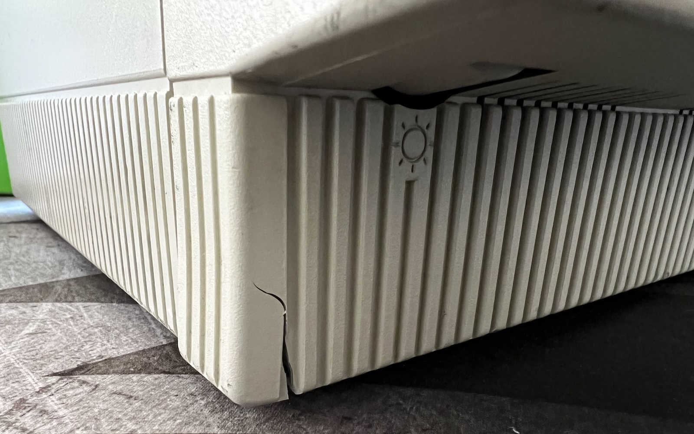
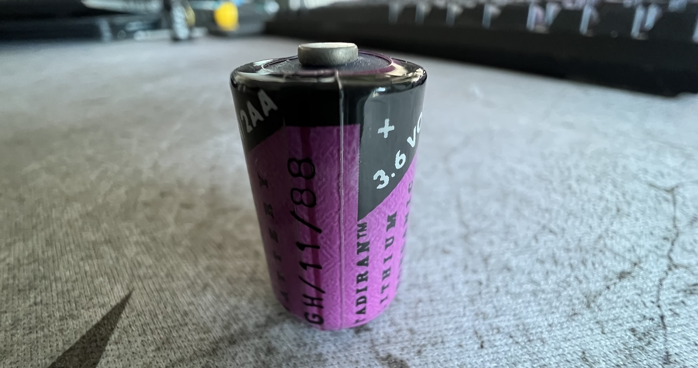
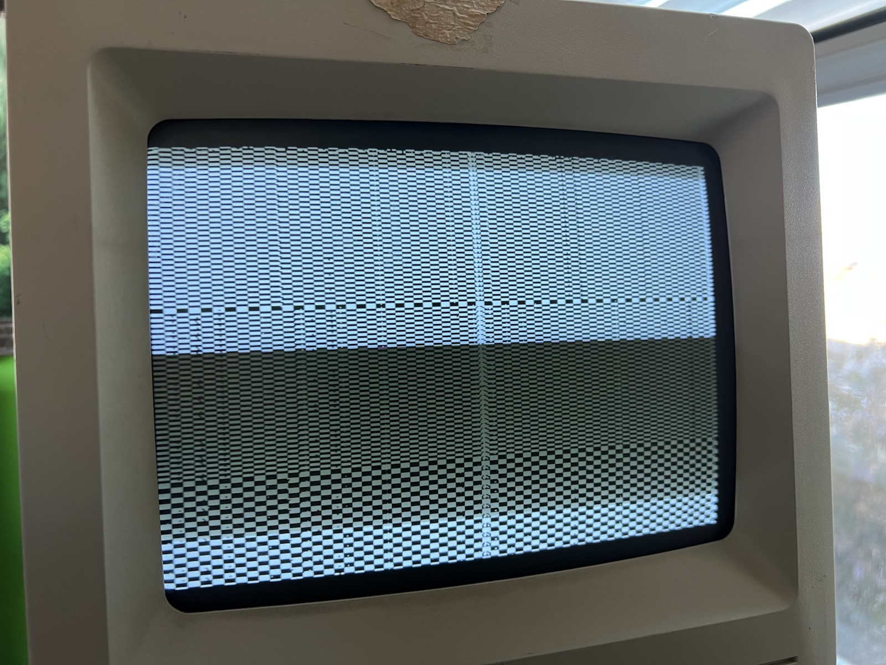
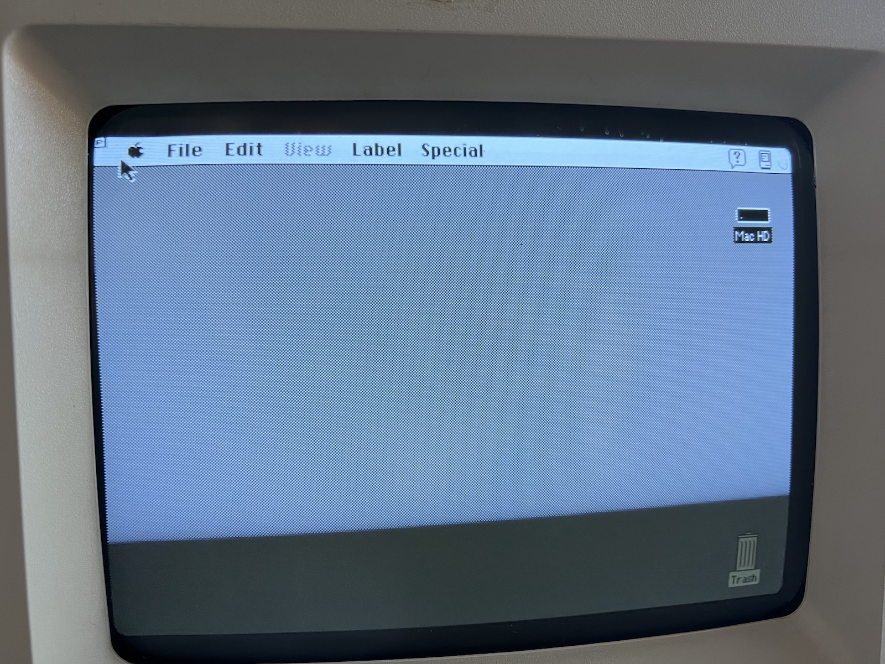

I just picked up a Macintosh SE/30 from eBay.
Back in the 80s and 90s, I was a PC user. I found the compact Macs to be so constrained in terms of expansion and screen size that I never had any interest in having one. Fast forward to now, and I appreciate their design and engineering. I actually owned a SE/30 back in the early 2000s when I was able to pick one up for cheap. I ran NetBSD on it for a while and had some fun with it before I eventually sold it. Back then, these little machines were plentiful, cheap, and largely intact.
Now these old computers have become increasingly scarce through the years. They fall apart, get thrown out, or their internal battery leaks and destroys them from the inside out. I wanted to pick up one and play with it again before it was too late.
My particular SE/30 arrived in decent shape, aside from a crack in the front that developed during shipping. The plastics have become brittle over the last three decades. These machines are notorious for falling apart in shipping no matter how well they’re packed. There’s also some dense sticker residue above the screen that looks like it’ll be a pain to remove.

The very first thing I did was open it up and take a look at the PRAM battery. These batteries are notorious for leaking, and the battery acid can irreversibly destroy the logic board. Fortunately, the battery in this one was perfectly intact if not ever so slightly swollen and deformed.

I took the battery out. The consequence of not having a battery in the computer is that it won’t remember the time and date (and possibly other settings in the PRAM) whenever I start it up. That’s a small price to pay for not having to worry about the battery killing the logic board. I’ll figure out a safer replacement later on.
Now it was time to power it up and see what happens.

Well, that’s not good. Not too horrible, but it’ll require a bit of work to fix. This is a simasimac pattern, which is a common symptom of capacitor failure. The electrolytic capacitors in pretty much every Mac from this era need to be replaced these days. It’s a very common repair and is well documented online.
I tried turning it on and off a few times, and actually managed to get it to boot properly!

The screen was a bit distorted and slightly flickering. Hopefully that clears up once I recap it.
Unfortunately, the floppy drive seems to be dead. I’m not sure if it just needs to be cleaned or if it’s no good.
Overall, not a bad specimen. Looks like my to-do list is:
- Super glue the cracked front
- Remove the sticker residue
- Replace the battery with something that won’t leak
- Replace the electrolytic capacitors throughout
- Repair or replace the floppy drive